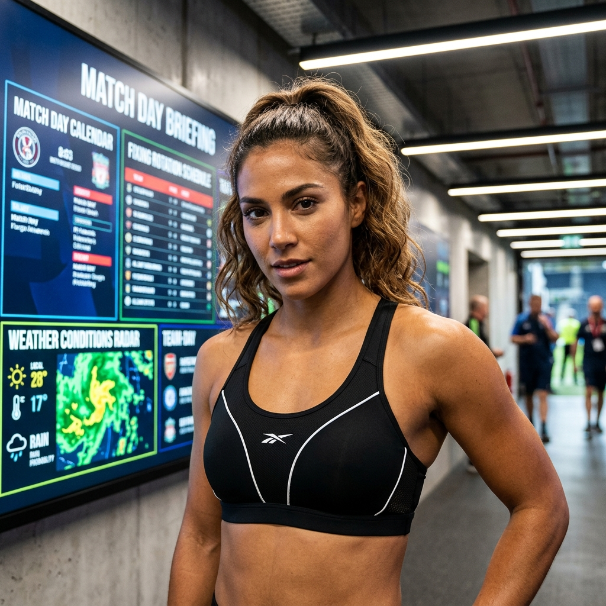
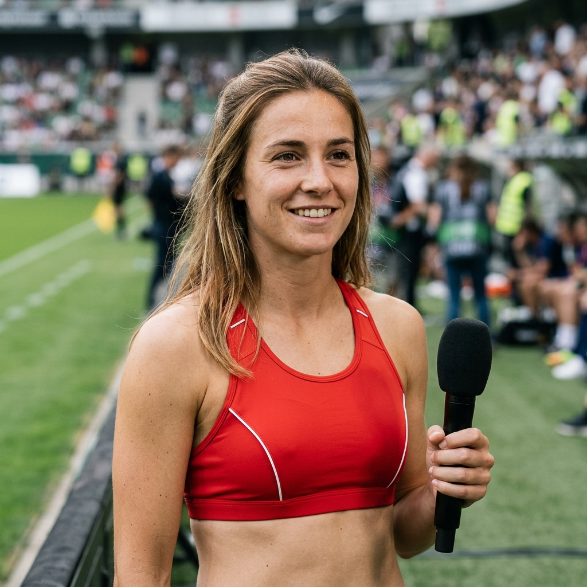

SOFÍA
ANALISTA DE JUGADORES
🟢 ANALIZANDO
📊 Rendimiento individual y minutos proyectados
Motor de Análisis e Inteligencia Deportiva




| PARTIDO / TORNEO ↕ | SELECCIÓN / JUGADOR ↕ | MERCADO & LÍNEA ↕ | CUOTA ↕ | PROB. PROYECTADA ↕ | CUOTA JUSTA ↕ | EV ↕ | RACHA L5 ↕ | ESTADO ↕ | ACCIONES |
|---|